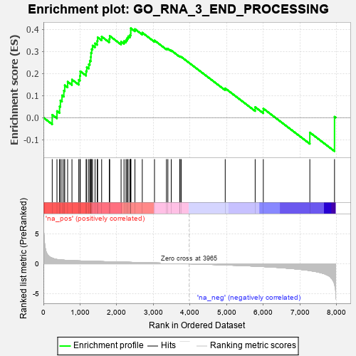
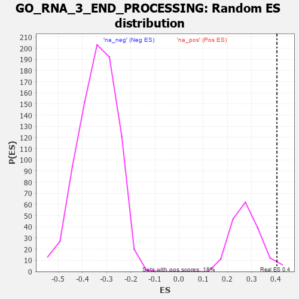

| | | Dataset | 7d |
| Phenotype | NoPhenotypeAvailable |
| Upregulated in class | na_pos |
| GeneSet | GO_RNA_3_END_PROCESSING |
| Enrichment Score (ES) | 0.4049469 |
| Normalized Enrichment Score (NES) | 1.4591112 |
| Nominal p-value | 0.033898305 |
| FDR q-value | 0.31666118 |
| FWER p-Value | 1.0 |
Table: GSEA Results Summary

Fig 1: Enrichment plot: GO_RNA_3_END_PROCESSING
Profile of the Running ES Score & Positions of GeneSet Members on the Rank Ordered List
| PROBE | GENE SYMBOL | GENE_TITLE | RANK IN GENE LIST | RANK METRIC SCORE | RUNNING ES | CORE ENRICHMENT | | 1 | SRSF9 | | | 240 | 0.950 | 0.0127 | Yes |
| 2 | LARP7 | | | 369 | 0.731 | 0.0297 | Yes |
| 3 | CPSF2 | | | 440 | 0.666 | 0.0510 | Yes |
| 4 | LEO1 | | | 463 | 0.655 | 0.0779 | Yes |
| 5 | THOC1 | | | 507 | 0.627 | 0.1008 | Yes |
| 6 | CSTF1 | | | 557 | 0.610 | 0.1223 | Yes |
| 7 | CCNB1 | | | 581 | 0.601 | 0.1466 | Yes |
| 8 | PARN | | | 660 | 0.572 | 0.1626 | Yes |
| 9 | CPSF6 | | | 778 | 0.538 | 0.1722 | Yes |
| 10 | CTR9 | | | 964 | 0.492 | 0.1711 | Yes |
| 11 | SSU72 | | | 996 | 0.485 | 0.1892 | Yes |
| 12 | CPSF1 | | | 1005 | 0.482 | 0.2100 | Yes |
| 13 | GRSF1 | | | 1164 | 0.452 | 0.2105 | Yes |
| 14 | CLP1 | | | 1182 | 0.450 | 0.2287 | Yes |
| 15 | CPSF3 | | | 1237 | 0.440 | 0.2418 | Yes |
| 16 | CDC73 | | | 1265 | 0.436 | 0.2582 | Yes |
| 17 | DKC1 | | | 1292 | 0.431 | 0.2744 | Yes |
| 18 | THOC3 | | | 1297 | 0.430 | 0.2933 | Yes |
| 19 | THOC6 | | | 1316 | 0.426 | 0.3103 | Yes |
| 20 | SNRPA | | | 1340 | 0.422 | 0.3265 | Yes |
| 21 | CSTF3 | | | 1408 | 0.409 | 0.3366 | Yes |
| 22 | U2AF2 | | | 1466 | 0.396 | 0.3473 | Yes |
| 23 | TRNT1 | | | 1479 | 0.394 | 0.3636 | Yes |
| 24 | PAF1 | | | 1588 | 0.376 | 0.3670 | Yes |
| 25 | THOC2 | | | 1796 | 0.338 | 0.3562 | Yes |
| 26 | PTCD1 | | | 1808 | 0.335 | 0.3700 | Yes |
| 27 | CPSF4 | | | 2118 | 0.288 | 0.3441 | Yes |
| 28 | THOC7 | | | 2198 | 0.277 | 0.3466 | Yes |
| 29 | SRSF1 | | | 2252 | 0.267 | 0.3520 | Yes |
| 30 | RPRD2 | | | 2283 | 0.263 | 0.3602 | Yes |
| 31 | SRSF4 | | | 2311 | 0.258 | 0.3684 | Yes |
| 32 | U2AF1 | | | 2359 | 0.252 | 0.3739 | Yes |
| 33 | SYMPK | | | 2381 | 0.248 | 0.3825 | Yes |
| 34 | SLU7 | | | 2382 | 0.248 | 0.3937 | Yes |
| 35 | NCBP2 | | | 2383 | 0.248 | 0.4049 | Yes |
| 36 | SARNP | | | 2496 | 0.227 | 0.4011 | No |
| 37 | SRSF3 | | | 2696 | 0.199 | 0.3850 | No |
| 38 | CSTF2 | | | 3029 | 0.145 | 0.3496 | No |
| 39 | RBM8A | | | 3355 | 0.096 | 0.3130 | No |
| 40 | TUT4 | | | 3394 | 0.090 | 0.3123 | No |
| 41 | ERI1 | | | 3486 | 0.079 | 0.3044 | No |
| 42 | HSF1 | | | 3718 | 0.039 | 0.2769 | No |
| 43 | CASC3 | | | 3727 | 0.037 | 0.2776 | No |
| 44 | SRSF2 | | | 3759 | 0.033 | 0.2752 | No |
| 45 | PCF11 | | | 4958 | -0.190 | 0.1326 | No |
| 46 | SRRM1 | | | 5775 | -0.398 | 0.0476 | No |
| 47 | TUT7 | | | 5997 | -0.471 | 0.0411 | No |
| 48 | CDK9 | | | 7266 | -1.138 | -0.0674 | No |
| 49 | WDR33 | | | 7939 | -3.452 | 0.0040 | No |
Table: GSEA details [plain text format]

Fig 2: GO_RNA_3_END_PROCESSING: Random ES distribution
Gene set null distribution of ES for GO_RNA_3_END_PROCESSING